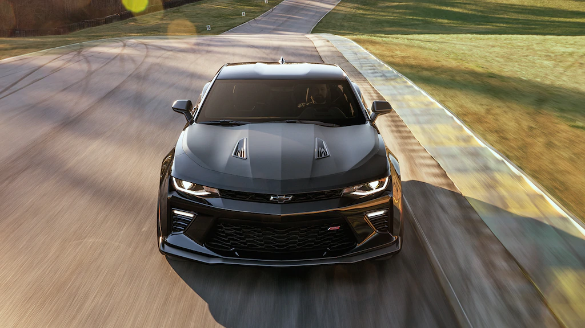

Cuando un motor de 455 caballos de fuerza impulsa un auto que tiene 200 libras menos que su predecesor, se establece un nuevo punto de referencia en cuanto a potencia. Y cuando esta potencia es optimizada por un arsenal de tecnologías sofisticadas de desempeño, los conductores experimentarán una sensación de agilidad y control inigualable. Conoce por qué el Camaro SS se lleva el título del más rápido y potente de los Camaro SS hasta ahora.
MOTOR LT1 V8 DE 6.2 L. La estrella de la gama de desempeño de Chevrolet, el V8 LT1 de 6.2 L con la capacidad de 455 caballos de fuerza y 455 lb-ft de torque acelera el Camaro SS con transmisión automática de 8 velocidades de 0 a 60 en solo 4.0 segundos.
ACTIVE REV MATCHING La transmisión manual de 6 velocidades cuenta con Active Rev Matching, función que anticipa los cambios descendentes con toques al acelerador para lograr cambios impecablemente suaves. Esta función replica los cambios "talón-punta", una técnica de precisión que los pilotos profesionales dominan luego de muchas horas de práctica. ¿El resultado? Los conductores del Camaro SS anticiparán cambios refinados y confianza absoluta durante la conducción de desempeño
MAGNETIC RIDE CONTROLTM Disponible en el Camaro SS, esta tecnología de suspensión magnética probada en las pistas lee la superficie del camino a razón de 1,000 veces por segundo y ajusta los amortiguadores con precisión para un manejo óptimo incluso en condiciones de terreno irregular. Los amortiguadores MR de tercera generación mejoran el tiempo de reacción y equilibrio para una sensación más natural, lo cual resulta en un desempeño y sensación del conductor óptima sin sacrificar un andar suave.
Modo Track (pista) Además de los modos Sport, Tour, para hielo y nieve, los conductores del Camaro SS también pueden seleccionar el modo Track (pista) para ajustar la suspensión, la progresión de aceleración, la sensación al hacer los cambios, la calibración de la dirección, el sonido del escape e incluso la iluminación tipo espectro disponible para interior para lograr la mejor experiencia en la pista posible.